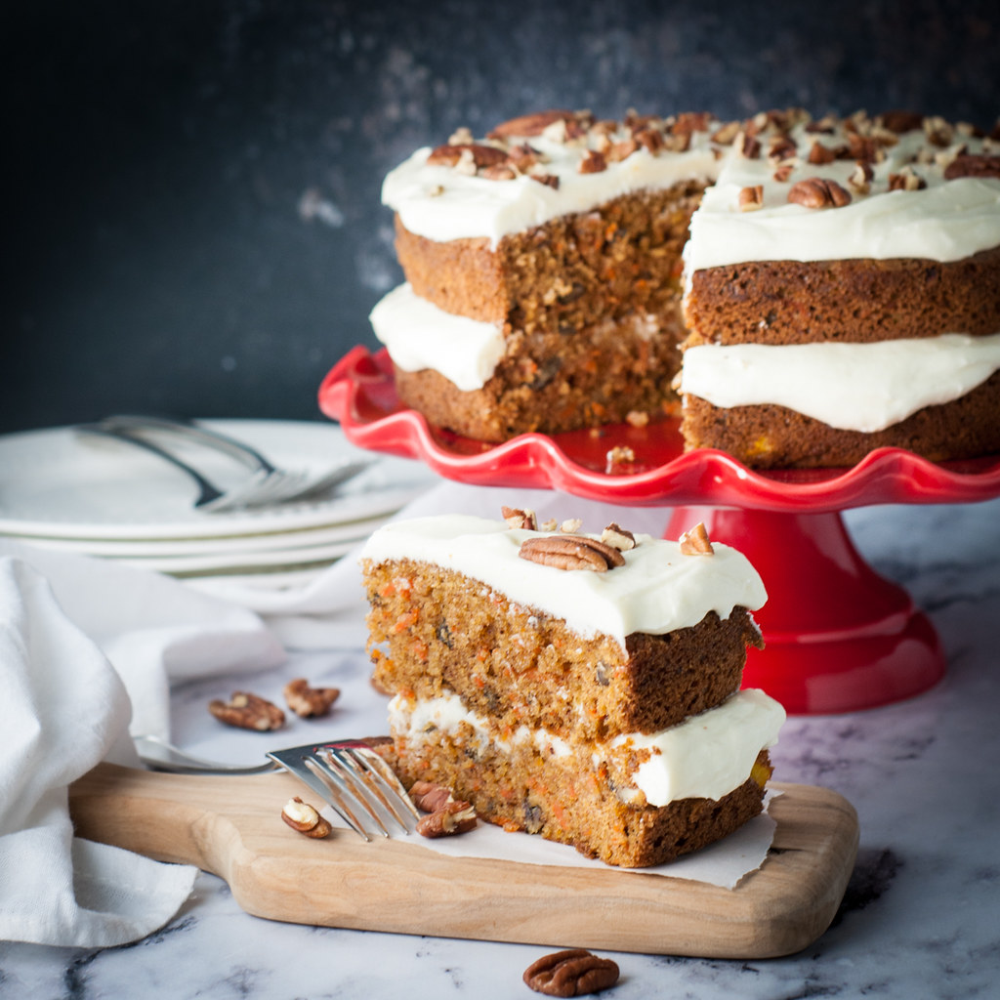
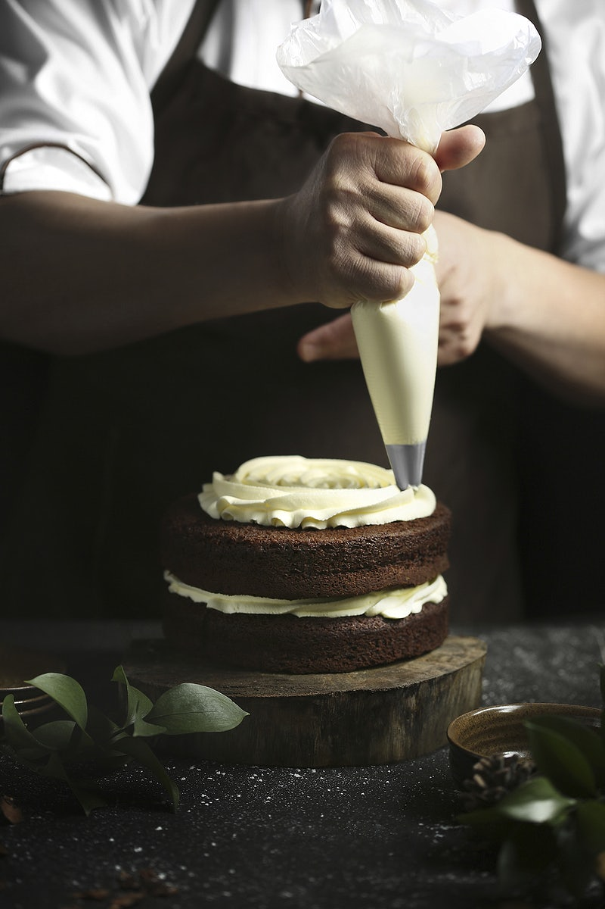

Carrot Cake Recipe with Vanilla Cream Cheese Frosting.
Created by Christine W. Hammill.

Some say it's "to die for".
Cake
Ingredients
2 cups flour
4 eggs
2 tsp. baking powder
2 cups sugar
1 1/2 tsp. soda
1 1/2 cups oil
1 tsp. salt
2 cups grated carrots
2 tsp. cinnamon
1 (8 1/2 oz.) crushed pineapple, drained
2/3 cup chopped nuts
Directions
Sift together flour, baking powder, soda, salt, and cinnamon.
Beat eggs and add sugar.
Let stand 10 minutes.
Turn into 3 greased and floured 9-inch round cake pans.
Bake at 350 degrees for 35-40 minutes.
Cool in pans for 10 minutes.
Remove to wire racks.
Cool well.
Frosting
Ingredients
1. 1/2 cup butter
2. 1 (8 oz.) cream cheese
3. 1 tsp. vanilla
4. 1 pound powdered sugar, sifted

Directions
* Mix butter, cream cheese, and vanilla.
* Add sugar.
* Frost between cake layers, then top, and sides.
I chose this recipe even though I have never tried it before. The story behind it makes up for that. This recipe can actually be found on Christine Hammill's gravestone in Ferndale, next to her husband Richard.
Being that it is on a gravestone, you may assume the couple is dead. Funny enough, they are still alive.
Occupied gravesite or not, this recipe has gotten the attention of many online users. There are a few social media accounts that test gravestone recipies, and that is how I found this one! By all accounts, it is more than just "good". I look forward to trying out the recipe myself one day.